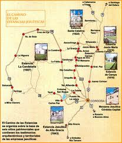

|
Introducción
La Comunidad se implantó en la provincia de Córdoba desde su fundación en 1573, donde creó la primera universidad del país. En la misma época se instalaron en otra región, cerca de las Cataratas del Iguazú, en la provincia de Misiones, al norte de Argentina. Allí crearon misiones para evangelizar al pueblo guaraní. Tanto en Buenos Aires como en Córdoba se le atibuyó una manzana de casas que luego se llamaría "La Manzana de las Luces", donde edificaron una iglesia y un colegio. Se llama Manzana de las Luces porque de esos colegios salieron grandes próceres y pensadores argentinos.
Las reducciones jesuíticas fueron 30, distribuidas de la siguiente manera: 
|